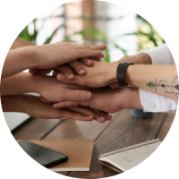
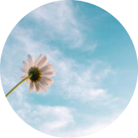
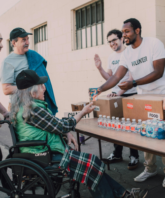
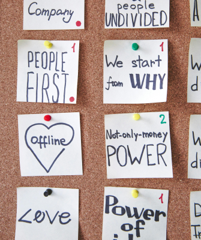

기업경영
기업경영
home > 사업소개 > S(사회책임)
S(사회책임)
함께하는 세상을 위해 사회와 동행
사회적 책임과 역할을 다하기 위해, 우리가 할 수 있는 것을 찾습니다. 교육 및 장학 사업을 통해 청소년들을 지원하고,
소외 계층을 통해 도움을 전하며, 예술의 힘으로 다양한 기회를 마련하고, 더 나은 세상을 만들기 위해 GS가 가진 기술력을 사용합니다.
상생경영
-

- Win-Win
- 어느 일방의 희생이 아닌 상생 협력체계 구축
-
- 신뢰
- 끊임 없는 소통과 경청을 통한 신뢰를 기반
-

- 미래지향
- 일회성, 단기적 성과보다 지속 가능한 성장 추구
-
공정한
거래문화
정착 -
실질적
경영지원 -
지속적
성장추구 - 열린 소통
인권경영
GS리테일은 임직원 뿐만 아니라,
모든 이해관계자들의 인권을 존중하며 인간으로서의 가치와 존엄성을 보장하겠습니다.
일하기 좋은 직장만들기, 임직원 인권 목표
- 즐겁고 보람된 일터를 만들어 갑니다.
- 누구나 차별없이 존중받는 근무 환경을 만들어 갑니다.
- 장애인, 취약근로자, 여성 및 임산부 근로자들의 행복하고, 일할 수 있는 근로환경을 제공합니다.
- GS리테일은 수평적 조직문화를 통해 누구나 소신있는 발언과 의견을 존중합니다.
고객만족경영
고객 한 분 한 분의 만족이 GS리테일의 사명이자 존재 이유입니다.
GS리테일의 고객만족경영은 생활과 문화입니다.
-
- TOTAL 서비스
-
고객관계관리를 통한
근본적 문제해결
-
- 가치공유 및 소통
- 가치공유 및 소통 문화 정착
-

- 서비스붐업활동
-
고객, 임직원이 참여하는
다양한 서비스 프로그램 진행
-

- 내부직원만족
- 자긍심 함양 프로젝트 진행